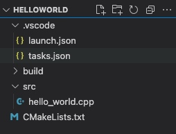
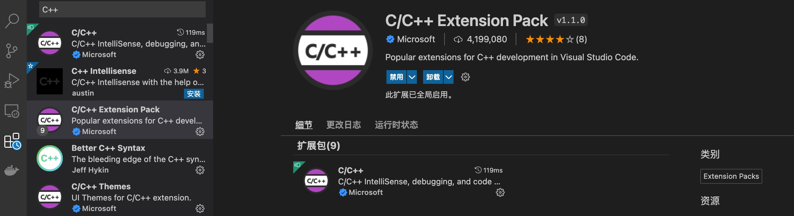
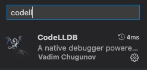
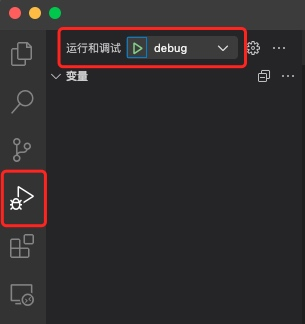

前期准备
目录创建
首先创建一个根目录、build文件夹、launch.json文件、tasks.json文件、.vscode文件夹、src文件目录，C++文件（hello.cpp）、CMakeLists.txt 大致如下图

安装VsCode C++插件
到VsCode的插件商店中搜索C++，安装C/C++ Extension Pack插件，这是个C++插件整合包，会包含C++基本插件。

安装CodeLLDB

生成配置文件
CMakeLists.txt
cmake_minimum_required(VERSION 3.2) # 指定最低cmake版本
project(hello) # 项目名
AUX_SOURCE_DIRECTORY(./src SRC_LIST) # 把当前目录(.)下所有源代码文件和头文件加入变量SRC_LIST
set(CMAKE_BUILD_TYPE DEBUG) # 设置生成debug类型的可执行文件
ADD_EXECUTABLE(hello ${SRC_LIST}) # 向项目中加入一个cpp文件
C++文件(hello.cpp)
#include <iostream>
using namespace std;
int main(int argc, char const *argv[])
{
cout << "hello world" <<endl;
return 0;
}
launch.json
在VsCode中，如果需要进行调试，是通过编写一个launch.json文件进行配置。该文件主要是设置debug的选项
{
"version": "0.2.0",
"configurations": [
{
"name": "debug",
"type": "lldb",
"request": "launch",
"program": "${workspaceFolder}/build/hello",
"args": [],
"stopOnEntry": true,
"cwd": "${workspaceFolder}",
"preLaunchTask": "build",
},
]
}
- name：配置的名字，可以存在不同配置，一般是一个调试目标有一个配置（显示在调试侧边栏上下拉选择列表中）；
- type：表明调试器的类型，使用Visual Studio Windows Debuger的时候必须是cppvsdbg；使用GDB或者LLDB时为cppdbg；
- request：表明是执行（launch）目标程序，还是连接（attach）已有的实例；
- program：表明调试的目标程序；
- args：执行目标参数需要的参数，格式为json列表；
- cwd：目标程序执行的工作目录；
- preLaunchTask：就是在开始调试前需要执行的任务，定义在task.json文件中，一般用来定义编译任务，生成目标程序。
tasks.json
{
"version": "2.0.0",
"tasks": [
{
"type": "shell",
"label": "build", //与launch.json中"preLaunchTask"对应
"command": "cd ${workspaceFolder}/build;cmake ..;make -j4;", // 编译过程，用分号隔开
"args": [], // 编译参数，对cmake编译来说不需要
"options": {
"cwd": "${workspaceFolder}"
},
}
]
}
settings.json
添加settings.json文件，可以改变项目中基本设置
{
"files.associations": {
"iosfwd": "cpp"
},
"files.defaultLanguage": "cpp", // ctrl+N新建文件后默认的语言
"editor.formatOnType": true, // 输入分号(C/C++的语句结束标识)后自动格式化,当前这一行的代码
"editor.suggest.snippetsPreventQuickSuggestions": false, // clangd的snippets有很多的跳转点，不用这个就必须手动触发Intellisense了
"editor.acceptSuggestionOnEnter": "off", // 按回车时一定是真正的换行，只有tab才会接受Intellisense
"editor.snippetSuggestions": "top", // snippets显示在补全列表顶端，默认是inline
"C_Cpp.clang_format_sortIncludes": true // 格式化时调整include的顺序（按字母排序）
}
build.sh
需要通过build.sh文件生成build文件夹，通过配置使c++的生成产物全部都输出到build文件夹。
build.sh放到项目根目录就可以了。
#!/bin/bash
echo "开始执行build文件夹创建操作"
if [ ! -d build ];then
mkdir build
echo "文件夹创建成功"
else
echo "build文件夹已经存在"
fi
执行Debug

在原文件中打好断点，点击如图按钮，就可以正常调试了。
总结
到此VSCode使用C++的环境配置就完成了，可以愉快的在VsCode中调试C++项目了。